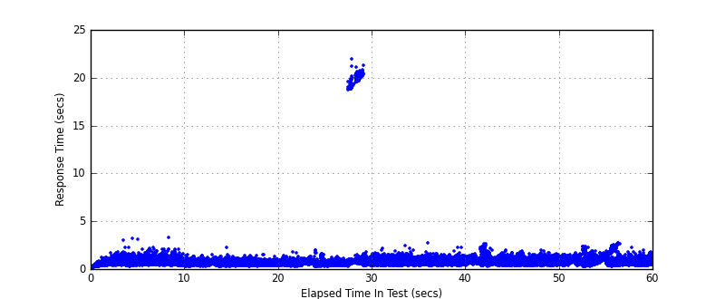

Performance Results Report
Summary
transactions: 58184
errors: 0
run time: 60 secs
rampup: 0 secs
test start: 2017-05-24 19:08:15
test finish: 2017-05-24 19:09:15
time-series interval: 5 secs
workload configuration:
| group name | threads | script name |
|---|
| user_group-21 | 30 | redis_stress.py |
| user_group-20 | 30 | redis_stress.py |
| user_group-23 | 30 | redis_stress.py |
| user_group-22 | 30 | redis_stress.py |
| user_group-25 | 30 | redis_stress.py |
| user_group-24 | 30 | redis_stress.py |
| user_group-2 | 30 | redis_stress.py |
| user_group-3 | 30 | redis_stress.py |
| user_group-1 | 30 | redis_stress.py |
| user_group-6 | 30 | redis_stress.py |
| user_group-7 | 30 | redis_stress.py |
| user_group-4 | 30 | redis_stress.py |
| user_group-5 | 30 | redis_stress.py |
| user_group-8 | 30 | redis_stress.py |
| user_group-9 | 30 | redis_stress.py |
| user_group-10 | 30 | redis_stress.py |
| user_group-11 | 30 | redis_stress.py |
| user_group-12 | 30 | redis_stress.py |
| user_group-13 | 30 | redis_stress.py |
| user_group-14 | 30 | redis_stress.py |
| user_group-15 | 30 | redis_stress.py |
| user_group-16 | 30 | redis_stress.py |
| user_group-17 | 30 | redis_stress.py |
| user_group-18 | 30 | redis_stress.py |
| user_group-19 | 30 | redis_stress.py |
All Transactions
Transaction Response Summary (secs)
| count | min | avg | 80pct | 90pct | 95pct | max | stdev |
|---|
| 58184 | 0.066 | 0.739 | 0.825 | 0.954 | 1.101 | 21.948 | 1.148 |
Interval Details (secs)
| interval | count | rate | min | avg | 80pct | 90pct | 95pct | max | stdev |
|---|
| 1 | 3293 | 658.60 | 0.073 | 0.624 | 0.791 | 0.911 | 1.065 | 3.155 | 0.259 |
| 2 | 4499 | 899.80 | 0.309 | 0.760 | 0.918 | 1.061 | 1.254 | 3.267 | 0.254 |
| 3 | 4924 | 984.80 | 0.243 | 0.538 | 0.639 | 0.729 | 0.825 | 2.200 | 0.152 |
| 4 | 4885 | 977.00 | 0.248 | 0.533 | 0.625 | 0.710 | 0.802 | 1.466 | 0.144 |
| 5 | 4752 | 950.40 | 0.220 | 0.557 | 0.655 | 0.736 | 0.828 | 1.931 | 0.167 |
| 6 | 4701 | 940.20 | 0.260 | 1.447 | 0.808 | 0.926 | 1.203 | 21.948 | 3.860 |
| 7 | 5026 | 1005.20 | 0.306 | 0.741 | 0.890 | 1.007 | 1.117 | 2.396 | 0.207 |
| 8 | 5225 | 1045.00 | 0.329 | 0.709 | 0.848 | 0.956 | 1.069 | 2.672 | 0.196 |
| 9 | 5090 | 1018.00 | 0.253 | 0.740 | 0.863 | 1.017 | 1.249 | 2.640 | 0.270 |
| 10 | 5205 | 1041.00 | 0.305 | 0.709 | 0.841 | 0.951 | 1.062 | 1.945 | 0.191 |
| 11 | 4556 | 911.20 | 0.235 | 0.781 | 0.978 | 1.146 | 1.316 | 2.343 | 0.287 |
| 12 | 5277 | 1055.40 | 0.266 | 0.724 | 0.840 | 1.011 | 1.322 | 2.706 | 0.318 |
Graphs
Response Time: 5 sec time-series

Response Time: raw data (all points)

Throughput: 5 sec time-series